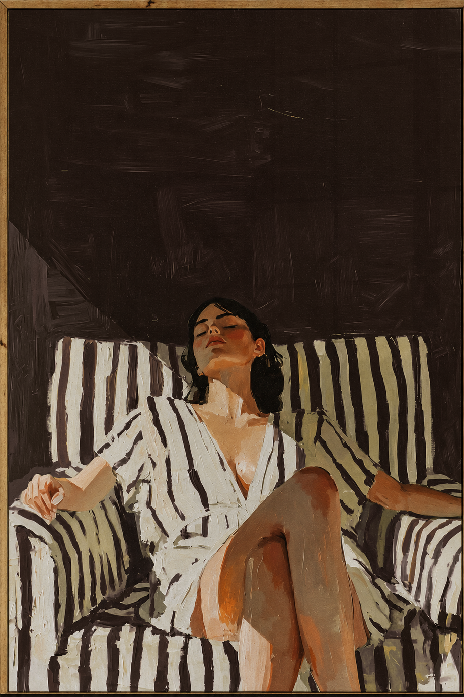

Itinerario
Feb. 04 – 06 2027[Travel] [Run&Sculpt] [Welcome Party] [The Wedding]

FIG 004 — El wedding weekend empieza el jueves 04 de febrero 2027.Para pasar un amazing weekend, estamos organizando una serie de momentos desde el viernes por la mañana hasta el sábado de la boda. Este itinerary es la guía base: qué pasa, cuándo pasa y qué vibe llevar a cada plan. Algunos detalles pueden ajustarse más cerca de la fecha, pero la idea es que todas tengan claro el mood del weekend desde ya.
Travel
Jueves 04 de Febrero FIG I — Llegada a Copán Ruinas, Honduras.Saldremos de SPS para Copán Ruinas. Día libre para turistear o rest, sauna y pool day en el hotel.
Run & Sculpt
Viernes 05 · 8:00 am FIG II — Las Ruinas Mayas. Sculpt & trail run.Una clase de sculpt y un trail run en las ruinas mayas. Solo para close friends & family. Wear sneakers!
Welcome Party
Viernes 05 · 4:00 pm FIG III — Hotel Marina Copán. Pool & bar.El pre-wedding en el pool & bar del Hotel Marina Copán. La primera celebración oficial del weekend.
The Wedding
Sábado 06 · 3:00 pm FIG IV — Catedral de Copán Ruinas & Centro de Convenciones Marina Copán.La misa en la Catedral de Copán Ruinas, seguida por la recepción en el Centro de Convenciones Marina Copán.